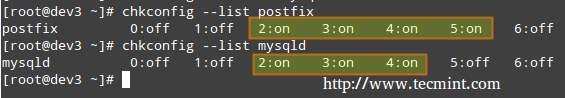
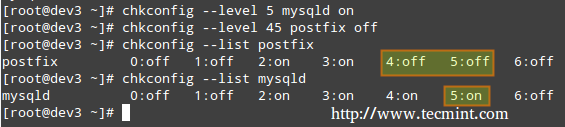
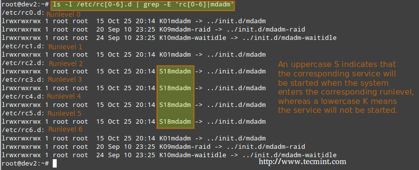

使用 chkconfig 管理服务
为了在启动时启动或者停用系统服务，我们可以在 CentOS / openSUSE 中使用 chkconfig 命令，在 Debian 及其衍生版中使用 sysv-rc-conf 命令。这个工具还能告诉我们对于一个指定的运行等级预先配置的状态是什么。
- 推荐阅读： 如何在 Linux 中停止和停用不想要的服务
列出某个服务的运行等级配置。
# chkconfig --list [service name]# chkconfig --list postfix# chkconfig --list mysqld

列出运行等级配置
从上图中我们可以看出，当系统进入运行等级 2 到 5 的时候就会启动 postfix，而默认情况下运行等级 2 到 4 时会运行 mysqld。现在假设我们并不希望如此。
例如，我们希望运行等级为 5 时也启动 mysqld，运行等级为 4 或 5 时关闭 postfix。下面分别针对两种情况进行设置（以 root 用户执行以下命令）。
为特定运行等级启用服务
# chkconfig --level [level(s)] service on# chkconfig --level 5 mysqld on
为特定运行等级停用服务
# chkconfig --level [level(s)] service off# chkconfig --level 45 postfix off

启用/停用服务
我们在基于 Debian 的系统中使用 sysv-rc-conf 完成类似任务。
使用 sysv-rc-conf 管理服务
配置服务自动启动时进入指定运行等级，同时禁止启动时进入其它运行等级。
-
我们可以用下面的命令查看启动 mdadm 时的运行等级。
# ls -l /etc/rc[0-6].d | grep -E 'rc[0-6]|mdadm'

查看运行中服务的运行等级
-
我们使用 sysv-rc-conf 设置防止 mdadm 在运行等级2 之外的其它等级启动。只需根据需要（你可以使用上下左右按键）选中或取消选中（通过空格键）。
# sysv-rc-conf

Sysv 运行等级配置
然后输入 q 退出。
-
重启系统并从步骤 1 开始再操作一遍。
# ls -l /etc/rc[0-6].d | grep -E 'rc[0-6]|mdadm'

验证服务运行等级
从上图中我们可以看出 mdadm 配置为只在运行等级 2 上启动。